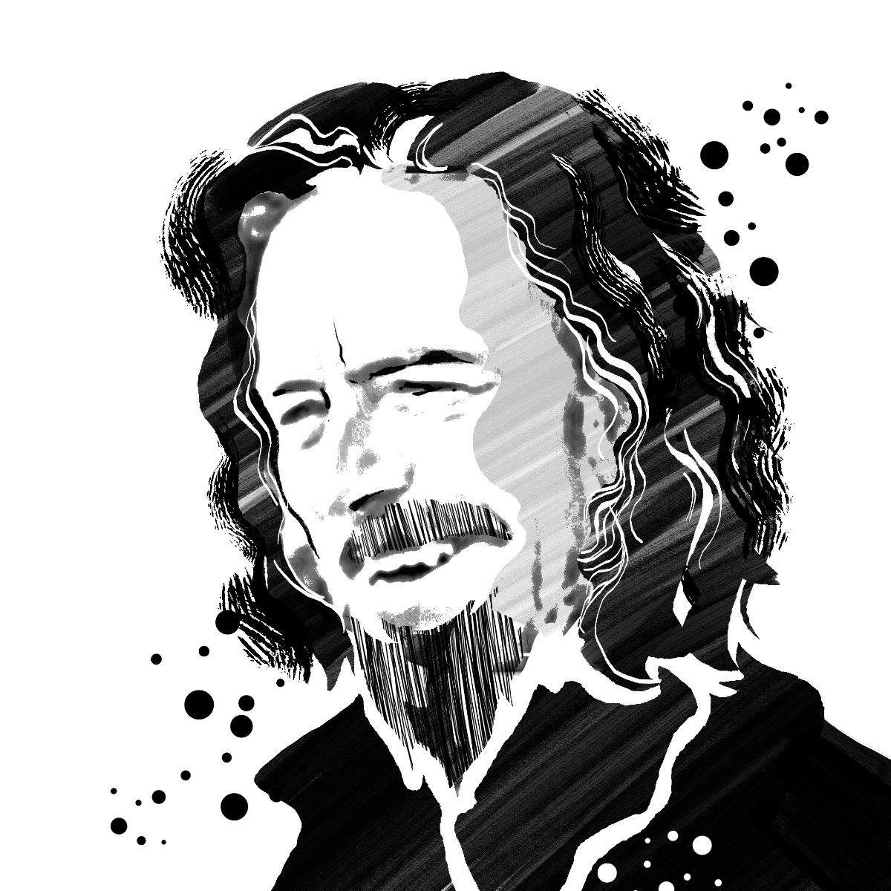
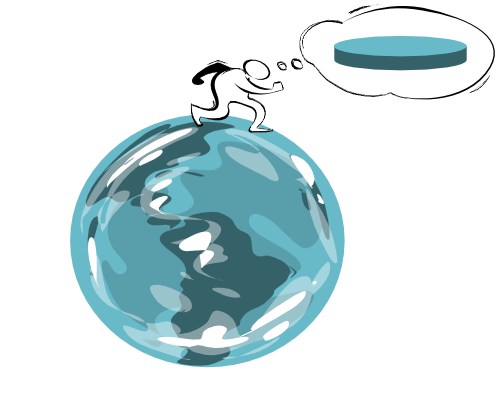
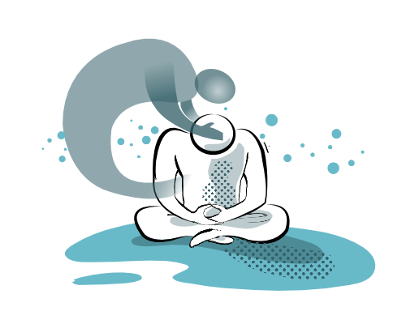

Was du gerade jetzt erfährst - vielleicht nennst du es das gewöhnliche
Alltagsbewusstsein - , ist
ES.
Und wenn du das erkennst, lachst du dich kaputt. Das ist die große Entdeckung.

Fast alle spirituellen Disziplinen - Meditation, Gebet und so weiter - sind Mittel, auf der Torheit zu
beharren.
Es sind Methoden, um auf entschlossene und konsequente Weise das zu tun, was man ohnehin schon tut.

Wenn jemand fest daran glaubt, die Erde sei eine Scheibe, kann man ihm das nicht ausreden.
[...]
Daher gibt es nur einen Weg, ihn vom Gegenteil zu überzeugen: Man muss ihn dazu bringen, nach dem
Rand zu suchen.
Wenn du nicht erwacht bist, zeigt das, dass du noch nicht erwachen möchtest.
